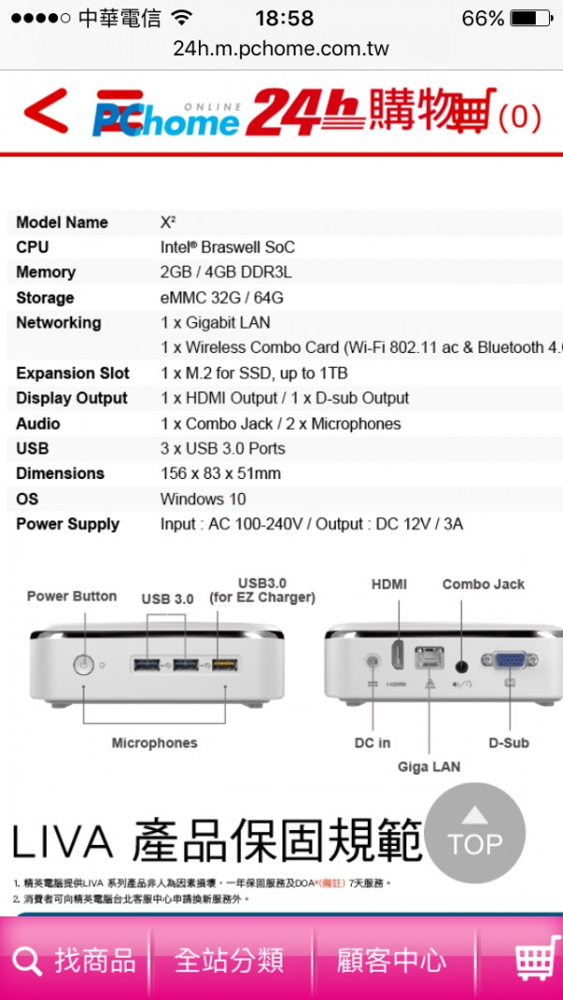
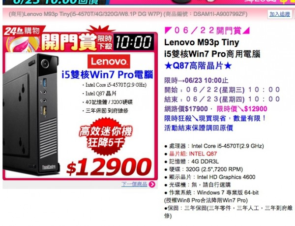

您好，請問這套的硬體規格，跑貴系統會順嗎？
因為工作檯面不大，和預算考量，想用這種較不佔空間的主機，謝謝

您好，請問這套的硬體規格，跑貴系統會順嗎？
因為工作檯面不大，和預算考量，想用這種較不佔空間的主機，謝謝

您好
SOC的CPU並不適合ＰＯＳ系統
建議您購買商用型電腦 Intel I3 I5等級的CPU 比較沒有效能上的顧慮
同樣也有體積較小的產品
如
http://24h.pchome.com.tw/prod/DSAM1I-A900799ZF?q=/S/DSAA4G

機殼規格
● 尺寸：寬(W): 179mm/長(D): 182 mm/高(H): 34.5 mm
● 重量：1.3Kg
● 保固：三年保固(三年零件，三年人工，三年到府維修，保固期內提供免付費技術諮詢專線0800-000702)